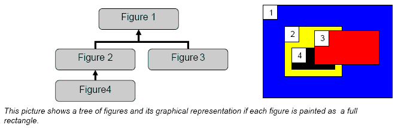

Figures are painted using a Graphics. The Graphics abstraction
allows Draw2d to wrapper an SWT GC for extended functionality as well as
performance optimizations. For example, Graphics supports pushing and popping of
the current state. A figure paints using the
following process:
Figure#paint() - This method is declared on the
interface, and kicks off the painting process. First, properties are set on the Graphics that would be inherited by children, including
Font, background, and foreground Color. Then the Graphics state is pushed so
that just these inherited settings can be restored when painting children.
Next, the following methods are called:Figure#paintFigure() - The figure paints itself. Figures are not required to paint at all. A
simple form of painting would be to fill in the bounding box with the
figure's background color.Figure#paintClientArea() - The client area is
where children appear. This method should apply any changes to the
Graphics which affect only children, such as coordinate system
modifications like translating the graphics to the client area. This
method also clips the graphics two the region where children are allowed
to appear.Figure#paintChildren() - Now that the client
area is setup, children are painted. After each child paints, the
graphics state is restored to the incoming state so that children do
not overwrite the inherited graphics settings from the parentFigure#paintBorder() - Finally, the figure
paints decorations which should appear on top of the children. If a
Border has been set on the figure, it paints now.The result of this process is that a figure composition (which structurally is a tree) paints in a pre-order, depth-first manner. The exception being the borders which are painted post-order. Using push and pop, changes made to the Graphics by one branch of figures have no affect on other branches. The order in which figures paint is often referred to as z-order. This term comes from the fact that the paint order creates the illusion of depth, and the z-axis would be perpendicular to the display's x and y axes. Z-order or paint order is also manifested in the way hit testing is done.

When a figure paints its children, it first clips the Graphics to its client area. As each child is painted, the graphics is also clipped to the child's bounds. This prevents the child from painting outside of its bounds or the client area of the parent. Clipping is cumulative based on the entire parent chain. Below, Figure 3 is parented by Figure 2, which is parented by Figure 1.